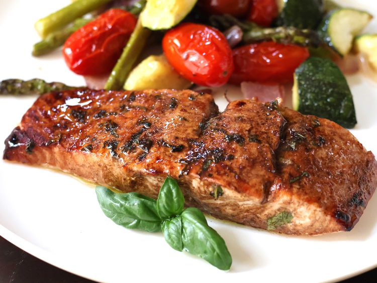

Home
Mediterranean Salmon

A simple Mediterranean inspired salmon recipe with fresh herbs and Mediterranean ingredients.
Ingredients
- ½ cup of olive oil
- ¼ cup of balsamic vinegar
- 4 cloves of garlic, pressed
- 4 4-ounces piece of salmon
- 1½ teaspoons garlic salt
- 1 tablespoon fresh cilantro, chopped
- 1 tablespoon fresh basil, chopped
Steps
- Mix both the olive oil and vinegar in a small bowl.
- Place the salmon on a shallow baking tray. Rub garlic onto the salmon then pour the oil and vinegar mixture on top, turning once to coat. Add the garlic salt and scatter the fresh herbs on top. Marinate for 10 minutes.
- Set an oven rack 6 inches from the heat source and preheat the oven's broiler
- Remove salmon from the marinade but keep the remaining marinade.
- Broil salmon in the preheated oven, turn occasionally while also brushing the remaining marinade, up until the last 4 minutes. Cook until the salmon is brown on both sides and flakes easily with a fork, around 10 to 12 minutes.